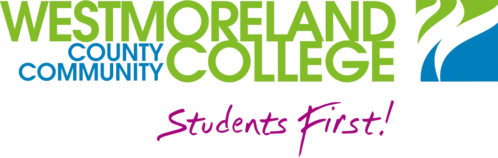

BIO-LAB
WESTMORELAND BIOLOGY
--:--:--
--- --, ----
WELCOME

INFORMATION AND LINKS FOR BIOLOGY LABORATORIES
BIOLOGY LAB
Welcome to Westmoreland Biology
We are here to help! Use the buttons to navigate to your course page. There is also Calendar and Weather information.